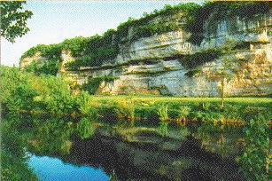
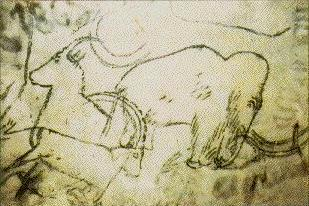

Mein Sommerurlaub
In July 1997 I vacationed in France, probably the country with the richest record of prehistoric humanity in the world. The record is especially rich in the Dordogne region of southwest France, and, within the Dordorgne, around the village of Les Eyzies, the self-styled "World Capital of Prehistory". I was lucky enough to be able to spend a few days there.Die ersten Cro-Magnon-Skelette wurden 1868 unter einem Felsüberhang an einem Ende des Ortes entdeckt. Eine kleine Tafel erinnert an diese Entdeckung. In der Nähe befindet sich die archäologische Stätte Abri Pataud. Am anderen Ende des Ortes liegen die Stätten Font de Gaume und Les Combarelles, die beide für die Öffentlichkeit zugänglich sind und Höhlenmalereien beherbergen.
 Nur wenige Kilometer außerhalb der Stadt liegen die Fundstellen von La Madeleine (nach der das Magdalénien benannt ist) und Le Moustier (Fundort eines berühmten Neandertaler-Skeletts, das 1908 entdeckt wurde, und nach dem der von Neandertalern verwendete Moustérien-Werkzeugbestand benannt ist).
Nur wenige Kilometer außerhalb der Stadt liegen die Fundstellen von La Madeleine (nach der das Magdalénien benannt ist) und Le Moustier (Fundort eines berühmten Neandertaler-Skeletts, das 1908 entdeckt wurde, und nach dem der von Neandertalern verwendete Moustérien-Werkzeugbestand benannt ist).
Das Musée National de Préhistoire befindet sich im Zentrum des Dorfes, eingebettet unter einer überhängenden Felswand. Dort gab es eine faszinierende temporäre Ausstellung mit Bildern, die zeigen, wie Neandertaler seit ihrer Entdeckung dargestellt wurden. Dieses Museum ist auch einer der wenigen Orte, an denen man ein echtes Hominidenfossil sehen kann: Das teilweise Skelett eines Neandertaler-Infanten aus Roc de Marsal wird der Öffentlichkeit ausgestellt. Außerhalb des Museums steht die berühmte Statue eines Neandertalers, die von Paul Darde im Jahr 1930 geschaffen wurde.

Die Felswohnungen von Roque St. Christophe wurden fast ununterbrochen seit über 50.000 Jahren bewohnt. Der Blick über das Tal des Vézère-Flusses ist herrlich. Die frühesten Bewohner waren Neandertaler (ein Diorama zeigt einen Neandertaler, der seine Familie vor einem Höhlenbären verteidigt), doch während des Mittelalters lebten auf den Felsvorsprüngen und am Fuß des Felsens eine kleine befestigte Stadt mit bis zu 1000 Menschen.Sehr nahe bei Roque St. Christophe befindet sich das PréhistoParc in Tursac. Dieser Freilichtpark bietet lebensgroße Dioramen ausgestorbener Tiere sowie Szenen aus dem Leben der Neandertaler und der Cro-Magnon-Menschen. Die aufwendigste Szene zeigt eine Gruppe von Neandertalern, die sich auf einen in einer Grube gefangenen Mammuts stürzen, um ihn zu töten. Diese Ausstellung und einige andere werden durch einen Soundtrack ergänzt, der alle 8 Minuten abgespielt wird und kleine Kinder sehr effektiv erschreckt.

Wir konnten Lascaux und einige andere Höhlen nicht besuchen, da diese bereits lange im Voraus ausgebucht sind. Zum Glück war es möglich, die Grotte de Rouffignac, etwa 20 km entfernt, ohne vorherige Buchung zu besuchen. Rouffignac ist besonders berühmt für die große Anzahl von auf den Wänden gemalten Mammuten. Eine kleine elektrische Bahn bringt die Besucher etwa eine Meile in die Höhle. Die Kunst stammt aus etwa vor 13.000 Jahren und besteht aus monochromen Linienzeichnungen und Schnitzereien, die nicht so spektakulär sind wie die aufwendigeren Gemälde in Lascaux, aber dennoch sehr gut sind. Neben den Mammuten gibt es ein besonders gutes Trio von Wollnashörnern. Die Große Decke, tief in der Höhle, enthält ein Fries von 66 Tieren, die an einer Stelle angefertigt wurden, an der die Decke ursprünglich nur 2 oder 3 Fuß hoch war. Der Boden wurde ausgehoben, sodass Besucher nun in die Kammer gehen und die gesamte Decke betrachten können.Für alle, die sich für die Vorgeschichte interessieren, ist Les Eyzies ein Ziel, das nicht verpasst werden sollte.
Diese Seite ist Teil der FAQ zu fossilen Menschenaffen im TalkOrigins-Archiv.
Startseite |
Arten |
Fossilien |
Kreationismus |
Lektüre |
Referenzen
Illustrationen |
Neuigkeiten |
Feedback |
Suche |
Links |
Fiktion
http://www.talkorigins.org/faqs/homs/eyzies.html, 11/11/97
Copyright © Jim Foley
|| E-Mail mir